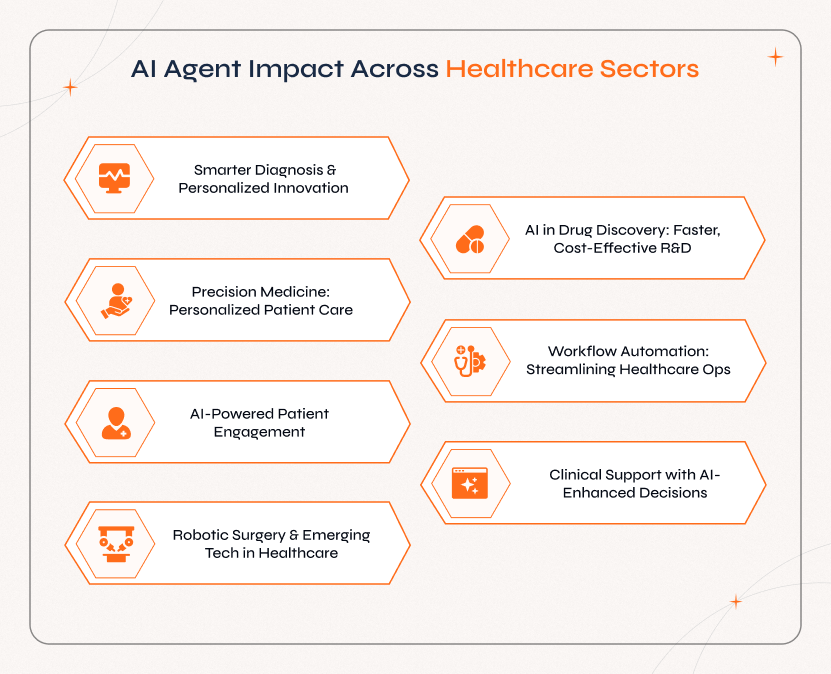
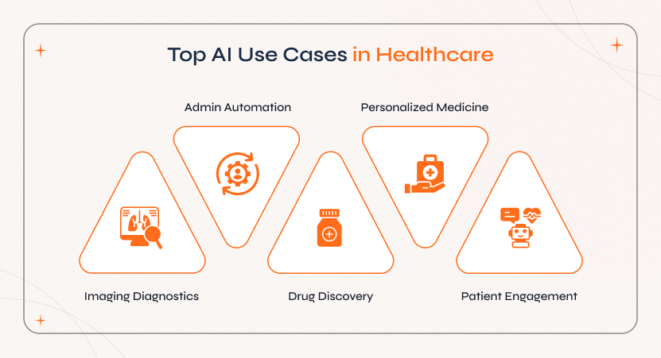
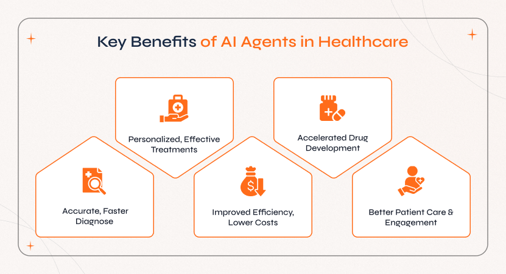
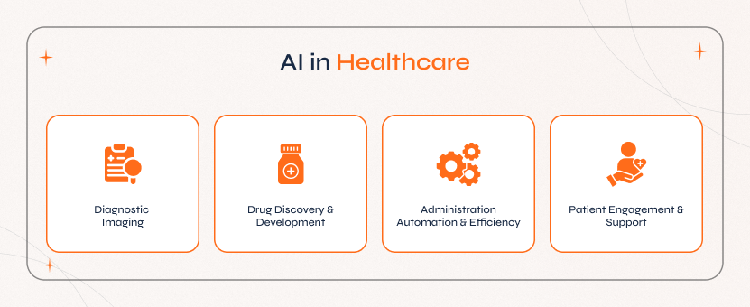

Artificial Intelligence (AI) is everywhere and is reshaping numerous industries, including healthcare, through the use of AI agents for healthcare. Imagine a world where your doctor has a digital assistant that constantly learns, analyzes, and provides the best care possible, just like an assistant that never sleeps. That's the reality we are stepping into with the growing use of AI agents in healthcare.
In today's world, different types of AI agents are central to the evolution of digital healthcare, ranging from virtual health assistants to automated clinical and administrative functions. These are just a few AI in healthcare examples that drive better patient outcomes and operational efficiency. The intelligent systems are being utilized in several important ways, such as:
- Medical Imaging: Detecting diseases like cancer or eye problems is more accurate and faster with AI agents analyzing medical images.
- Administrative Tasks: AI handles routine tasks like scheduling, billing, and coding, allowing doctors and nurses to focus more on patient care.
- Drug Discovery: Through data-driven analysis, medical AI agents accelerate the discovery of new medicines and potential treatment methods, making the process faster and more cost-effective.
- Personalized Medicine: Intelligent agents in healthcare analyze patients’ health data and suggest the best treatment plans tailored to them.
- Patient Engagement: AI-powered chatbots and remote monitoring systems assist patients in managing their health and maintaining communication with their doctors.
The key advantages of integrating AI agents into healthcare include better diagnoses, faster drug development, reduced administrative workload, lower costs, and increased patient satisfaction.
Despite these benefits, challenges associated with using AI agents in the medical sector include, but are not limited to, data privacy and security, bias in AI, compliance with regulations, integration with existing systems, ethical concerns, and training healthcare workers.
It is anticipated that, in the future, AI will identify health issues before they become serious and suggest ways to prevent illness by analyzing data. Additionally, we can expect AI agents in healthcare to provide even more precisely personalized treatments, to work alongside humans and not replace them, and to enhance patient care.
1. Introduction - What is AI and How is it Changing the Healthcare Sector?
Artificial Intelligence (AI) refers to the ability of machines to perform tasks that require human intelligence. These technologies are bringing transformative impacts to the healthcare industry as they mimic human cognitive functions like perceiving, reasoning, learning, and problem-solving within a clinical context. The technologies include:
- Machine Learning (ML) is a branch of AI that learns from data to make predictions or decisions.
- Deep Learning (DL) is a subset of ML that uses complex neural networks to analyze data.
- Natural Language Processing (NLP) enables computers to understand and process human language.
- Generative AI (GenAI) that is capable of creating new content, including text, images, etc.
From Data to Diagnosis - The Forces Fueling AI's Rise in Healthcare
Several key factors are driving the rapid adoption of AI agents in the healthcare industry, and are as follows:
- Data Proliferation - Training sophisticated AI models relies on vast amounts of health-related data that includes health records, medical imaging, wearable devices, etc.
- Economic Pressure - AI offers powerful solutions to tackle rising costs, aging populations, and workforce shortages by automating tasks, enhancing efficiency, reducing errors, and leading to significant cost savings.
- Technological Advancements - Complex AI applications have become more feasible and effective with advancements in AI algorithms, increased computational power, and enhanced data security measures.
- Impact of COVID-19 - The pandemic showed how important digital healthcare infrastructure, rapid data analysis, and remote care capabilities are, accelerating more use of AI agents in tracking outbreaks and virtual patient care.
- Patient Expectations - Like other industry sectors, patients now expect more personalized, convenient, and technology-enabled healthcare experiences.
Healthcare AI agents will cut down costs, improve efficiency, and address staffing. Although AI can potentially transform clinical practices, its rapid adoption is in operational areas with clear ROI and fewer implementation challenges.
Purpose of the Report
This report offers a comprehensive analysis of the most significant AI use cases that are reshaping the healthcare sector. It will:
- Determine the key domains of AI applications.
- Evaluate leading use cases based on impact and adoption.
- Measure the benefits of AI integration.
- Examine challenges and limitations restricting the implementation.
- Showcase real-world examples.
- Explore emerging trends and the future of AI agents in healthcare.
The goal of this report is to provide an expert, evidence-based perspective for the stakeholders navigating this dynamic field.
Partner with us to build AI healthcare assistants to boost efficiency & outcomes.

2. Mapping the Role of AI Agent’s Impact Across Healthcare Sectors

The use of AI agents in healthcare is creating an impact across clinical care, delivery, and research. Organizations classify AI applications in different ways. For instance, WHO refers to it as universal health coverage or better well-being, etc., while industry experts group them based on who uses them, like patients, clinicians, or administrators. This report adopts a functional domain approach and explains the areas where AI-powered healthcare agents are creating the most impact.
2.1 Revolutionizing Diagnosis, Personalization, and Systemic Innovation
Intelligent AI agents for healthcare analyze complex medical records and enhance diagnosis accuracy and efficiency.
- Medical Imaging Analysis - It is one of the most advanced and highly researched application
areas of AI agents in healthcare. Deep learning models like convolutional neural networks (CNNs) are
proficient in analyzing complex images from X-rays, CT scans, MRIs, eye scans, and digital pathology
slides. These models assist in detecting conditions like lung and breast cancer, diabetic
retinopathy, pneumonia, infectious diseases, neurological disorders like Alzheimer’s, brain tumors,
etc.
Overall, AI agents excel in spotting tiny details and patterns that would otherwise be missed by the human eye. It not only improves diagnosis accuracy but also speeds up image interpretation and reduces errors. - Genomic Data Analysis - Medical AI agents analyze both genetic and biological data to determine variations linked to diseases, making it easier to diagnose conditions more accurately and personally.
- Other Diagnostic Data - AI interprets ECG patterns for cardiac issues, vital signs for early warnings, lab results analysis, and extracts diagnostic information from unstructured clinical notes using NLP.
Healthcare AI agents provide a comprehensive understanding of a patient's condition for more accurate diagnoses with the integration of multi-modal data that combines imaging, genomics, electronic health records (EHRs), and wearable sensor data.
2.2 AI-Powered Drug Discovery - Streamlining Development and Cutting Costs
Discovering and developing new drugs is time-consuming, costly, and prone to failure until AI took up the pharmaceutical industry. AI has streamlined the drug discovery and development process effortlessly.
- Target Identification & Validation - By analyzing large sets of biological data, AI finds new targets involved in disease development.
- Drug Candidate Design and Screening - AI predicts protein structure in 3D, designs new drug molecules, and tests how well they work. By virtually screening billions of compounds, AI does the job faster than traditional methods.
- Predicting Effectiveness & Safety - Machine learning models can find how a drug will work in the body and flag possible side effects early, thus avoiding failures in later stages of development.
- Improving Clinical Trials - AI helps speed up clinical trials by quickly finding the right patients, designing better trial plans, predicting who might drop out, and monitoring safety in real-time. It even runs virtual trials to test different strategies.
- Drug Repurposing - AI supports finding new uses for existing approved drugs by analyzing how they work and matching them to other diseases.
Health care AI agents are changing how new medicines are being discovered. While traditional development of a single drug takes over 10 years, costing $1.3–$2.8 billion with a 90% failure rate, A-powered health care agents offer a faster and more effective way. Reports show that AI can cut early-stage development time by up to 15 times and reduce costs by up to 70%. Insilico Medicine is such an example that was discovered and designed with the help of AI, and its Phase 1 clinical trials were done in under 30 months.
This effectively highlights the shift from slow trial-and-error methods to faster and more data-driven drug development.
2.3 AI-Driven Precision Medicine - Customizing Care Based on Individual Profiles
Personalized or precision medicine is about giving the right treatment to the right person at the right time. Digital healthcare focuses on each person's unique genes, health conditions, lifestyle, and environmental factors to make better healthcare decisions.
- Predictive Modeling for Risk Assessment - AI analyzes data sources and early intervention strategies to predict an individual's risk of developing specific diseases.
- Treatment Selection & Planning - Upon integrating patient-specific data, AI-powered healthcare agents recommend effective treatment protocols in oncology and pharmacogenomics.
- Real-Time Treatment Adaptation - AI systems analyze the data from remote monitoring devices and dynamically adjust treatment plans for chronic conditions.
- AI in Formulation & Delivery - AI optimizes pharmaceutical formulations and develops 3D-printed dosage forms as personalized drug delivery systems.
2.4 Streamlining Operations - AI Agents in Administrative Workflow Automation
Traditional treatments work for most people, but not necessarily for what works best for each individual. Hence, digital healthcare continues to evolve by offering personalized medicine, such as treating patients based on their unique traits, remained a concept rather than a reality for a longer time. AI, particularly with ML, made spotting hidden patterns in large, complex datasets possible.
A large part of spending and staff time in healthcare is taken up by paperwork and routine tasks. AI agents for healthcare use tools like RPA and NLP to automate healthcare operations. Among the key types of AI agents, the administrative assistants handle tasks to effectively cut down costs and let healthcare providers spend more time focusing on patients. The key areas where AI helps include:
- Clinical Documentation - AI tools automate the creation of clinical notes, listen to doctor-patient conversations and create summaries automatically, transcribe voice dictation, and fill in patient information in EHR fields. Thus, AI voice agents in healthcare reduce paperwork and ease physical stress on doctors.
- Billing, Coding & Revenue Cycle Management (RCM) - AI automates tasks like assigning codes to medical procedures, handling insurance claims, managing approvals, spotting billing mistakes, and flagging fraud. This, in turn, makes the payment process faster and more accurate.
- Scheduling & Patient Flow optimization - AI algorithms optimize appointment scheduling, predict hospital admissions, manage bed utilization, and streamline patient flow within facilities.
- Inventory & Resource Management - AI predicts the need for medical supplies and optimizes inventory levels, reducing waste. It can also help plan staff schedules by predicting how many workers will be needed.
Administrative automation is the first area in healthcare organizations to use AI, as it saves administrative tasks that cost about 30% of total healthcare expenses in the US, which adds up to over $500 billion a year on staffing. AI saves about 30 - 40% of time spent on these tasks, which involve fewer risks and less regulation compared to AI used in treatment or diagnosis. Use cases like AI scribes are widely adopted, indicating they address operational inefficiencies effectively.
2.5 AI-Driven Patient Engagement: Enhancing Care Beyond the Clinic
AI agents in healthcare service are changing the way healthcare providers connect with patients, i.e., shifting from occasional appointments to ongoing monitoring, personalized messages, and easy-to-access support. The key uses include:
- AI Chatbots & Virtual Health Assistants (VHAs) - These are popular types of AI agents that offer 24/7 access to information, schedule appointments, send medication reminders, provide health tips, and offer basic mental health support like CBT techniques.
- Remote Patient Monitoring (RPM) - AI reviews data from wearable sensors to track vital signs and detect early warning signs. Thus, AI alerts patients and doctors in time.
- Personalized Engagement & Adherence Support - AI agents customize messages, learning materials, and reminders based on each person's needs, culture, health data, etc. This helps patients better understand their care and thereby stick to the treatments and healthy habits.
AI-driven tools have shifted healthcare providers from traditional, limited ways of interacting with patients. With 24/7 availability, continuous monitoring, and personalized feedback, AI empowers patients to manage their own health better. This leads to better treatment quality, greater satisfaction, and improved health outcomes. However, relying on virtual health assistants powered by AI raises concerns about losing the human touch, empathy, and trust between patients and providers.
To truly support healthcare, AI agents must enhance human care and not replace it. Thus, striking the right balance between advanced technology and human interaction is the key to delivering a better digital healthcare experience.
2.6 Augmenting Clinicians - Clinical Decision Support Systems (CDSS)
With AI, CDSS, one of the types of healthcare AI assistants, is smarter by providing more accurate, personalized, and real-time insights to help with complex medical decisions. AI-powered CDSS capabilities include:
- Integrating Diverse Data - AI retrieves and processes information from EHRs, lab results, scans, genomics, and medical literature.
- Generating Recommendations & Alerts - AI suggests possible diagnoses, ranks treatment options, flags drug interactions or allergies, and provides early warnings for conditions like sepsis.
- Improving Accuracy & Reducing Errors - AI assists clinicians in making informed decisions, helping reduce diagnostic errors and supporting better care.
Earlier, CDSS worked on fixed "if-then" rules. Now, AI and ML enable systems to learn from data, identify patterns that humans may miss, and update suggestions based on new inputs. Tools that predict sepsis risk are a strong example of this capability.
However, for AI-CDSS to perform effectively, it should be tested in real-life clinical settings, earn the trust of healthcare professionals, and integrate smoothly with existing systems like EHRs. Its full potential is realized when smart technology is combined with practical, reliable, and proven support, helping clinicians deliver better care.
2.7 Expanding Horizons - Robotic Surgery and Emerging Technologies
Healthforce AI is making progress in specialized medical fields beyond the core areas. It is creating new applications across the healthcare ecosystem.
- Robot-Assisted Surgery - AI enhances surgical robots by improving visualization, providing real-time support, and analyzing surgical video feeds for insights.
- AI in Medical Education & Training - With AI-powered simulations and VR environments, students and clinicians can practice diagnostic reasoning and surgical procedures.
- Public Health Surveillance & Epidemiology - AI analyzes vast datasets to detect disease outbreaks and guide public health interventions.
- Mental Health Applications - AI tools are being developed for mental health assessment, symptom monitoring, and delivering automated therapeutic interventions.
These emerging applications highlight how versatile AI agents in healthcare services are. It is not just a tool for data processing, but also plays a role in robotics, medical training, public health management, and mental health support. This shows that AI can influence nearly every part of healthcare and help reshape how care is delivered.
Work with our experts to build AI agents for clinical, operational, and research efficiency.
3. Leading the Way - Top AI Use Cases in Healthcare
To find out which AI applications are the top use cases in healthcare today, we need to look at a few important factors that reflect their current impact and future potential. The following are the key points suggested by industry reports and research to help evaluate the most impactful AI applications in healthcare:

- Adoption Rate - It implies the extent of current implementation, from initial exploration to deployment and scaling across organizations.
- Potential Impact on Patient Outcomes - The extent to which the application has the ability to improve clinical outcomes like diagnostic accuracy and treatment effectiveness.
- Economic Impact - The potential to reduce healthcare costs, enhance efficiency, and deliver quantifiable ROI.
- Innovation Potential/Transformation - The ability of the AI application to bring new changes, introduce new things, and help improve how healthcare works.
- Market Size & Growth - The current market size and projected growth rates will reflect the commercial interest and investment.
Analysing AI applications against these criteria reveals a detailed picture:
1. Medical Imaging Diagnostics
AI in this area significantly improves patient outcomes by enhancing accuracy and enabling earlier detection. Many AI tools received regulatory approval, and AI diagnostics is growing rapidly. But with increasing adoption comes challenges like integrating medical AI agents into existing systems, gaining trust from clinicians, and addressing performance variations across different settings. While this is a leading application, it is yet to be used everywhere.
2. Administrative Automation
With current usage and proven economic benefits, AI in this area scores high. It solves major problems like high administrative costs and staff burnout while delivering clear ROI. Surveys highlight that it has strong potential and moderate to high adoption compared to other areas. It plays a major role in transforming how the healthcare system operates, despite being a less groundbreaking application in healthcare.
3. Drug Discovery & Development
It is one of the most promising areas of AI that holds the potential to transform a slow and expensive process. Having attracted a lot of investment, this application has already shown impressive progress in speeding up early research. Unlike hospitals and clinics, pharmaceutical companies are slower in turning AI tests into real-world use. Although it is not being used across the full drug development process, Gartner reports that it is expected to reach a major milestone by 2025.
4. Personalized Medicine & Risk Prediction
This is another area that delivers high potential impact on patient outcomes and changes the way doctors treat patients. It uses healthcare AI agents to analyze complex data such as genetics, health records, and wearable devices to predict risks and offer personalized treatments. It raises privacy concerns as it requires advanced systems to bring all this data together. It is already being adopted, especially in areas like cancer and diabetes, where strong data and research are already available.
5. Patient Engagement (Chatbots/RPM)
A growing number of healthcare providers started using tools like chatbots and remote monitoring in a way to improve patient satisfaction, help them follow the treatments, and make care more accessible. These AI tools in healthcare also save costs by reducing call center work and re-admission in hospitals. There are still concerns about how well they work in clinical care, such as patients' trust, data privacy, and the risk of making healthcare feel less personal.
4. Measuring the Impact - Key Benefits of AI Agents in Healthcare
The integration of AI into healthcare is not only bringing substantial benefits across different domains but is also enhancing diagnostic accuracy, operational efficiency, and patient outcomes.

4.1 Enhancing Accuracy and Speed in Diagnosis
AI technologies are built to naturally enhance the accuracy and speed of medical diagnoses, leading to better detection and patient outcomes.
- Enhanced Accuracy - AI algorithms excel at analyzing complex medical data, from MRIs and CT scans to X-rays, identifying subtle patterns indicative of diseases. The real-world AI in healthcare example includes Google Health's AI systems that have demonstrated superior accuracy in detecting early-stage breast cancer in mammograms compared to human radiologists. Similarly, AI tools in healthcare have outperformed standard risk scores in detecting lung cancer from nodules.
- Faster Diagnosis - AI can process and analyze medical images much faster than human clinicians, thus reducing patient wait times to obtain diagnostic results. This opens up the possibility of quickly initiating treatment, which is critical in sensitive conditions like stroke or sepsis. For example, AI can classify brain tumors from MRI images in minutes, whereas it traditionally takes about 40 minutes.
- Early Disease Detection - AI is capable of detecting early signs of diseases like cancer, sepsis, diabetic retinopathy, and heart conditions, when they are more treatable. This approach has great potential to improve patient outcomes and reduce long-term healthcare costs.
5.2 Making Treatments More Effective and Personal
Sales AI agents in healthcare support creating more effective and personalized therapies using patient-specific data.
- Optimized Treatment Plans - AI suggests the most suitable treatments by analyzing individual patient data such as clinical history, genetic markers, lifestyle, and imaging. This approach maximizes treatment possibilities while reducing side effects. This is particularly helpful in oncology, where AI helps match treatments to specific tumor mutations.
- Predicting Treatment Response - AI models predict how a patient might respond to different therapies, helping clinicians choose the best treatment and avoid ineffective ones.
- Improved Surgical Outcomes - AI enhances precision in robot-assisted surgery. It also provides navigation support and stabilizes movements for better outcomes.
5.3 Boosting Efficiency While Reducing Expenses
With the sales AI agent, healthcare systems work much more smoothly, and it helps save money by improving day-to-day operations.
- Reduced Administrative Work - AI handles repetitive tasks like writing clinical notes, medical billing automation, insurance processing, and scheduling appointments. This, in turn, reduces the 30–40% of time spent by doctors and staff on paperwork, allowing them to focus more on patient care.
- Saving Costs - Sales AI agents in healthcare saves money in multiple ways—lowering administrative costs, reducing billing errors, spotting health problems earlier, using hospital space and staff more efficiently, and cutting drug development costs. According to reports, the healthcare sector in the US saves as much as $200–$360 billion every year with AI.
- Better Scheduling & Use of Resources - Sales AI agent improves the way hospitals manage patient visits, appointments, staffing, supplies, and more. For instance, the Mayo Clinic witnessed a 25% drop in missed appointments after using AI for appointment scheduling.
5.4 Speeding Up New Drug Development
AI is transforming how new medicines are discovered and developed.
- Faster Timelines – AI makes drug development faster by quickly finding drug targets, screening candidates, and conducting early-stage tests. With AI, tasks such as designing molecules can be done in weeks, which otherwise take months or years.
- Lower Costs – AI reduces costs by cutting development time, predicting failures earlier, and making the process more efficient. Reports claim that AI can lower early drug discovery costs by up to 70%.
- Higher Success Rates – With AI, clinical trials are more successful as they help design better studies, pick the right patients, and predict how well a drug will work or whether it might have side effects. For example, QuantHealth uses AI to predict the outcomes of late-stage clinical trials accurately.
4.5 Enhancing Patient Care and Connection
AI tools in healthcare are making it easier for patients to connect with healthcare and manage their health.
- Better Access and Convenience – AI chatbots and virtual assistants work 24/7 to answer queries, schedule appointments, and provide basic advice. This makes healthcare more accessible anytime. AI also powers telehealth and remote monitoring tools that help reach patients at home.
- Personalized Support – AI customizes health tips, reminders, and education based on each person's needs. This helps patients better understand their condition and stick to treatment plans.
- Higher Satisfaction – Patients are happier with faster responses from chatbots, less diagnostic wait times, less paperwork, and care that feels more personal. Case studies report significant improvements in satisfaction metrics.
- Patient Empowerment – With the help of AI in apps, wearables, and online tools, patients can take charge of their health and make more informed choices.
It is important to understand that many of the benefits of AI agents in healthcare are connected. For instance, treatment becomes faster and more effective with more accurate diagnoses, which helps prevent patients from developing more serious health problems and reduces long-term costs. Similarly, AI handles administrative tasks that not only cut down expenses but also allow doctors to spend more time with patients. To measure AI's impact, it is vital to examine how it improves care, operations, costs, and the patient experience.
From cost savings to improved diagnoses, our healthcare AI solutions deliver real impact.
5. Why AI Adoption Isn’t Easy Yet
There are many challenges involved with the use of AI agents in healthcare, in addition to the benefits they offer. These issues include data privacy, regulations, technical setup, ethical concerns, and human acceptance.
6.1 Governing Healthcare Data: From Privacy to Bias Control
Data plays a major role in AI. However, working with healthcare data brings many challenges.
- Privacy & Security: Data in the healthcare sector is very sensitive and must comply with strict privacy rules like HIPAA and GDPR. As AI systems handle large volumes of data, strong protections are needed to prevent data leaks or misuse. Methods like data anonymization are tricky, as they involve risks that could re-identify anonymous data. Therefore, people should trust that their data is handled safely and securely.
- Data Quality & Availability: AI requires large amounts of data that should be clean, complete, and accurate. Often, healthcare data is scattered across different areas and is incomplete. Thus, poor data quality leads to weak and unreliable AI results.
- Bias in AI: AI can inherit unfair data patterns from the data it has been trained on. When certain information is underrepresented in the data, AI ends up providing less accurate or biased results. Therefore, to produce more accurate results, it is vital to train AI with diverse data, ensure regular bias checks, and conduct fairness testing.
- Data Sharing Challenges: AI needs data collected from different sources to be robust and useful. However, ethical data sharing is challenging due to technical problems, varying regulations, and privacy concerns.
5.2 Staying Compliant: AI Laws, Ethics, and Liability
The regulations surrounding the use of AI agents in healthcare are complicated and still evolving.
- Changing Rules: Current healthcare laws weren't designed with AI in mind. This is especially true for AI tools in healthcare that continuously learn and update themselves. Moreover, there is no global agreement on how to regulate AI, although steps are being taken, such as the EU AI Act, WHO guidance, and updates from the FDA. The lack of clear regulations may slow down AI progress. However, a risk-based approach, like implementing stricter rules for high-risk AI tools and simpler ones for low-risk tools, can be followed.
- Getting Approval: For an AI tool to be used in healthcare, it is vital to obtain official approval to prove that it's safe and effective. This process can be time-consuming and requires significant effort, especially for tools that function as medical devices, such as Software as a Medical Device (SaMD).
- Who's Responsible: When using an AI tool in healthcare, if something goes wrong, like a misdiagnosis, it's unclear who is at fault. Since it involves the AI creator, the doctor, and the hospital, this is termed the "Black Box" problem, as AI decisions can be hard to explain. Therefore, better rules and laws are required to determine responsibility. The WHO has even suggested establishing special funds to help patients harmed by AI, without needing to assign blame first.
5.3 Implementing AI Agents - Costs, Compatibility, and Complexity
Healthcare organizations often consider the ROI against the initial cost of AI agent deployment. Implementing AI agents into real-world healthcare settings isn't always easy for the following reasons:
- Systems Don't Always Connect: AI tools need to work seamlessly with hospital systems, especially Electronic Health Records (EHRs). However, many systems from different vendors don't integrate well with each other. Therefore, adding new AI tools to existing workflows can be challenging, especially if the current systems weren't designed for this kind of technology.
- High Upfront Costs: Setting up AI can be expensive, as it often requires powerful computers, specialized software, and robust data systems. The cost of AI agents varies, and hospitals also need to invest in setup, training personnel, and system maintenance. To justify these costs, healthcare leaders should assess potential savings or benefits. Consequently, many healthcare centers start with small test projects before scaling up.
- Too Complex for Some Hospitals: Building and operating advanced AI tools in healthcare requires skilled experts and strong technical support. Not every hospital has the necessary personnel or infrastructure for this.
6.4 AI Ethics - Balancing Trust, Accountability, and Skills
Beyond regulatory compliance, using AI agents in healthcare raises important ethical questions.
- Making AI Understandable: Certain AI systems, especially deep learning models, are hard to explain and function like a "black box," where even experts can't fully understand how decisions are made. This makes it difficult for doctors to trust them, identify mistakes, or take responsibility for errors. Researchers are working on explainable AI (XAI) to make these systems more transparent, but challenges remain.
- Earning Trust: Doctors and patients may hesitate to rely on AI for diagnosis and treatment advice. They might worry about factors like accuracy, bias, loss of human touch, or not understanding how AI agents made a decision. To build trust, AI needs rigorous testing, clear communication, and involvement from both patients and healthcare workers during development.
- Knowing Who's Responsible: If an AI system causes harm, it's important to clearly define who is accountable, whether it's the developer, hospital, or the doctor using it.
- Patient Rights & Consent: Patients should be informed when AI is involved in their care, and must be able to give consent. This means understanding what the AI does, how it helps, and any associated risks.
- Keeping Human Skills Sharp: If AI handles too much, like diagnosing or writing notes, doctors might rely on it too heavily and lose some of their own skills over time. Therefore, AI should serve as a supportive aid to professionals, not replace them.
5.5 AI Integration - Training, Adoption, and Managing Workforce Transitions
The success of AI agents in healthcare isn't just about technology; it also heavily depends on people. Knowing how to build an AI agent that aligns with digital healthcare is crucial when it comes to integration.
- Skill Gap: Many healthcare providers currently lack training in AI, data handling, or digital healthcare tools needed to use these systems effectively. Bridging this gap requires ongoing training, upskilling programs, and sometimes bringing in new talent with a tech background.
- Adapting to Change: AI changes traditional workflows, such as appointment scheduling and diagnosis processes. This can be challenging for staff trained in conventional methods. To minimize resistance, AI tools should be user-friendly and integrate naturally into existing workflows. Involving healthcare providers like doctors, nurses, and administrators early in the process helps smooth the transition.
- Leadership & Vision: AI initiatives are at risk without a clear strategy and proper support from leadership. Therefore, it's vital for organizations to have a solid plan, dedicated leadership, and appropriate oversight to ensure AI is used effectively and ethically.
6. AI in Healthcare Examples - Real-World Applications and Impactful Case Studies
All over the world, hospitals and health tech companies collaborate with an AI agent development company to work and turn innovation into real impact. Some of the standout AI agents in healthcare examples are listed below:

6.1 Diagnostic Imaging:
1. Google Health/DeepMind – They built AI tools to spot breast cancer from mammograms and detect diabetic retinopathy from eye scans with accuracy comparable to top specialists. Similarly, Viz.ai helps doctors detect strokes quickly by analysing CT scans in real-time, speeding up decisions where every second counts.
2. IDx-DR (now called Digital Diagnostics) – This is the first FDA-approved, Medicare-reimbursed AI system that can independently screen for diabetic eye disease without needing a specialist to interpret the results.
3. Academic Medical Centers – Duke Health's Sepsis Watch uses AI to scan patient data and predict who might develop sepsis, a serious infection. Reportedly, it has doubled the chances of catching it early. The Virtual Pathology Project uses AI in detecting pathology images and detecting diseases through tissue samples. Mount Sinai Health System is using AI to analyse brain scans for early signs of Alzheimer's disease.
6.2 Drug Discovery & Development
AI is not just actively helping doctors; it is revolutionizing how new medicines are discovered and tested. Some real-world examples of how leading companies use AI to bring drugs to market faster and smarter are listed below:
1. Insilico Medicine developed a brand-new drug molecule in just 46 days, a process that usually takes months or sometimes years. One of its AI-discovered drugs for fibrosis has already entered human trials in under 30 months.
2. Pfizer used an AI platform from Saama Technologies to clean up clinical trial data for COVID-19 dramatically faster, which has cut down the process from 25 days to less than 2 days. Besides, Pfizer also used AI and partnered with several AI firms to boost R&D in developing Paxlovid, an antiviral treatment.
3. Sanofi teamed up with Exscientia, an AI drug design company, to analyze vast amounts of patient data to guide research. They also use AI tools from Aily Labs to make better decisions across the company.
4. QuantHealth built AI models that simulate clinical trials and predict outcomes with high accuracy. One of the collaborations saved a pharma partner $215 million by optimizing trial designs and reducing timelines.
5. Innoplexus developed a platform to scan scientific papers and trial data to find out if a drug will succeed. It accurately predicted the failure of a major Alzheimer's drug trial before it happened.
Other big names like Eli Lilly, Roche, Johnson & Johnson, AstraZeneca, Tempus AI, and Exscientia are all using AI to transform how drugs are developed.
6.3 Administration Automation & Efficiency
Intelligent automation in healthcare is not just helpful with diagnoses; rather, it's making hospitals run more smoothly by cutting down paperwork and streamlining everyday tasks. It is vital to partner with an experienced AI agent development company to achieve all these benefits. Here is how AI agents work from behind the scenes in some leading organizations:
1. Kaiser Permanente uses AI scribes that listen during doctor visits and automatically create clinical notes. This helps doctors spend more time with patients and less on paperwork. With the AIM-HI program, they develop and test new AI models using their large data network.
2. Mayo Clinic partnered with Google Cloud to reduce the time doctors spend on electronic health records by 30% using NLP. Their AI tools are found to improve appointment scheduling and cut patient no-show rates by 25%.
3. Cleveland Clinic uses an AI-powered virtual "command center" to manage staffing, surgery room usage, and patient flow in real-time.
4. Banner Health deployed robotic process automation (RPA) bots to handle tasks like verifying insurance and filling in billing information. This saves time and prevents errors.
5. Cerner and University of Missouri Health Care partnered to automate routine tasks in EHRs and improve data analysis.
6. Nao Medical used XpertDox’s AI platform to automate 94% of their medical coding, increasing billing accuracy and speeding up payments. This resulted in a 15% increase in captured revenue.
7. Cedars-Sinai is testing an AI assistant app (Aiva) that helps nurses reduce time spent on non-clinical tasks.
8. A Riseapps client used a custom AI speech-to-text tool that cut doctor documentation time by 40% while improving accuracy.
6.4 Patient Engagement & Support:
AI is not just helping doctors; it is directly connecting them with patients. Tools like symptom checkers, virtual nurses, etc., are making healthcare more responsive, accessible, and patient-centered.
1. Symptom Checkers/VHAs – Platforms like Babylon Health, Ada Health, and HealthTap support AI-powered chatbots that help patients assess symptoms directly before seeing a doctor. HealthTap's chatbot has reduced patient wait times by 50%.
2. Mental Health – Woebot, an AI chatbot delivering cognitive behavioral therapy (CBT) support, helped users feel better at work and reduce mental strain.
3. Remote Monitoring & Adherence – With Sensely's virtual assistant, clinics saw 30-day hospital readmissions decrease by up to 75% through better remote monitoring. AI chatbots that send reminders have improved appointment attendance rates across clinics.
4. Custom Implementations – Markitech’s chatbot for General Health Clinic reduced response times by 80% and boosted patient satisfaction by 60%. TeraCrunch’s assistant increased patient engagement by 40%, reduced staff workload, and raised satisfaction scores by 35%. Riseapps built "Amina" for Black Doctor, automating patient questions and helping with faster diagnoses.
5. Public Health – During the COVID-19 pandemic, the CDC deployed an AI chatbot that helped users assess symptoms and find testing sites. This showcases AI's role in large-scale public health responses.
Upon analyzing all these successful implementations, one common theme found is that they often target specific, well-defined problems for which AI provides clear value. With tight collaboration between healthcare providers and tech teams, it is possible to measure progress with real metrics like saved time, cost reduction, and happier patients.
From automating tasks to enhancing virtual health assistants, we help healthcare leaders innovate.
7. The Future of AI Agents in Healthcare, Emerging Trends & What Lies Ahead
AI agent in healthcare is not just about current developments; rather, it is about what's coming next. The future is unfolding, shaped by cutting-edge tools like Generative AI, advanced machine learning models, and a new wave of innovation that redefines how care is delivered.
7.1 The Evolution of Generative AI and Advanced ML Models
GenAI's Expanding Role: Generative AI (GenAI) marks a major shift and is unlike earlier AI; it doesn't merely involve recognizing patterns or making predictions. Rather, it can create text, data, and even molecular structures.
Key developments include:
- Automatic clinical documentation and patient summaries
- Human-like chat interfaces for patient communication and triage
- AI-generated synthetic datasets for research that preserve patient privacy
- GenAI-powered early-stage drug molecule design
- Natural language interactions that make AI accessible to non-technical users
Model Advancements: AI models themselves are becoming smarter and more flexible. This includes the capability for AI to process and remember more information at once, which is critical in complex clinical scenarios. The modern AI agent platforms can understand and reason across text, images, speech, and sensor data, which is beneficial for diagnostics, radiology, or remote monitoring. With new models consuming less data and computing power, AI is more accessible and scalable. With ML, NLP, and knowledge graphs, an effective AI agent platform delivers more adaptable, real-world solutions.
Managing the Hype vs. Reality: Gartner reports that GenAI has started to move from the "Peak of Inflated Expectations" and is entering the "Trough of Disillusionment." This means the hype is settling down, and serious progress is being made. This results in a stronger focus on ROI and measurable outcomes, identifying what works, and GenAI becoming a key factor used alongside proven AI tools.
7.2 Embracing Predictive, Preventive, and Personalized Healthcare Models
AI is enabling healthcare to make a pivotal shift from reacting to illness to preventing it altogether and from one-size-fits-all medicine to personalized treatment for each individual.
Proactive Healthcare: AI excels in detecting patterns in vast data streams that are usually hard or complex for humans to detect. This enables early risk prediction, allowing individuals with high risks to be identified early and offered timely interventions. As a result, outcomes improve and long-term costs are reduced.
Precision Medicine at Scale: With AI, treatments will be designed not just for a disease but tailored for you. This is possible with AI as it supports integrating data from genomics, proteomics, metabolomics, EHRs, imaging, lifestyle, and wearable sensor data. Thus, clinicians can build highly personalized care plans and even simulate how a patient will respond to treatment using AI-generated "digital twins."
Continuous Monitoring & Management: With the support of the Internet of Medical Things (IoMT) and smart wearables, AI systems monitor patients' health in real-time. They can detect signs of deterioration early and trigger proactive alerts. In the future, we will receive treatments that are automatically adjusted without waiting for human input, which is ideal for managing chronic conditions like heart disease or diabetes.
7.3 The Future of Healthcare: Human and AI Working Together
As AI gains trust in clinics, operating rooms, and administrative offices, its role isn't to replace humans but to empower them.
Augmentation, Not Replacement – As per research and expert opinions, AI will primarily serve to augment and not replace human clinicians. AI will analyze large data in seconds, automate repetitive tasks, highlight diagnoses, and offer evidence-based recommendations. Thus, human expertise — offering clinical reasoning, compassion, and ethical judgment — remains irreplaceable. According to studies, human-AI teams outperform either working alone.
Evolving Roles & Skills – In order to work alongside AI, clinicians need to evolve by developing basic AI and data literacy. They should learn to interpret and question AI outputs and become adept at integrating AI into clinical workflows. With AI handling more routine tasks, clinicians can focus on complex decision-making, patient relationships, and personalized care delivery.
Ambient Clinical Intelligence – The emerging trend is that AI systems can listen to and observe patient-provider interactions and generate clinical documentation, summaries, and even orders to reduce administrative work.
7.4 AI Integration: Market Trends and the Path Forward
AI agent in healthcare is not just a trend; rather, it is a transformative movement with a long-term vision.
Market Growth – Global AI agent in healthcare is expected to surpass $150 billion, and in some forecasts, even $200 billion, by 2030, with annual growth rates between 38.5% and 49.1%. The growth is driven by the increasing use of AI in areas like diagnostics, drug development, and patient care.
Long-Term Vision – In the next decade, AI is expected to be a core part of healthcare, leading to continuous learning systems, connected care, personalized medicine, a preventive focus, and patient empowerment.
Transformative Healthcare Delivery – AI is not only improving existing processes but is also changing how healthcare is delivered. With decentralized care, routine treatments are moving from hospitals to homes or community centers via telehealth and remote monitoring. Smart hospitals use AI to manage resources efficiently and offer better patient care.
Achieving all these visions involves overcoming several challenges, such as ensuring different systems can work together and share data securely, following ethical guidelines and regulations, enabling technical integration, and training the workforce.
As an experienced AI agent development company, we build future-ready, ethical, & scalable AI agents.
Conclusion and Strategic Recommendations
8.1 Summary of Key Findings
The use of AI agents in healthcare is rapidly becoming a vital part, moving from experimental stages to playing significant roles in clinical practice, research, and administration.
Current Effective Applications - AI enhances the analysis of medical imaging, which helps in faster and more accurate diagnoses. Administrative tasks are automated, which improves efficiency. AI speeds up the development of new medicines, reducing time and costs. It provides tailored treatments to individual patients based on unique data. Patients can manage their health and communicate with providers better.
Measurable Benefits - AI improves diagnostic accuracy and speed. It helps with the faster development of drugs at lower costs. Operational efficiencies lead to cost savings and reduced workload for healthcare providers. Enhanced patient access to care and increased satisfaction.
Ongoing Challenges - Data issues such as ensuring privacy, security, and quality of data while avoiding biases. Developing clear and adaptable regulations, overcoming complexities related to interoperability, and associated costs. Additionally, ethical considerations, addressing the skills gap, and managing changes within healthcare organizations.
Future Outlook - Advancements in AI, including Generative AI and multi-modal models, are paving the way for a transformative shift towards predictive healthcare, preventive care, personalized treatment, and participatory medicine.
8.2 Overall Conclusion
AI is evolving from being a set of individual tools to becoming a foundational technology in healthcare. It was initially applied in areas like automating healthcare tasks in administration and supporting medical imaging diagnostics due to clear ROI and immediate needs. But, its significant long-term potential lies in accelerating medical research and enabling personalized, predictive, and preventive care.
In order to achieve this potential, there are a few challenges and complications to be overcome. These include data management, ethical considerations, regulatory frameworks, technical integration, and workforce readiness. Overcoming all these barriers requires a collaborative effort from healthcare providers, technologists, regulators, and patients. By working together responsibly and ethically, we can harness the full potential of AI to transform healthcare for the better.
8.3 Strategic Recommendations for Stakeholders
In order to integrate AI into healthcare effectively, different stakeholders should consider the following strategies:
- Develop a Clear AI Plan - Identify specific goals for AI adoption, starting with areas that offer clear benefits, like automating administrative work.
- Improve Data Management - Ensure the data is accurate, secure, and easily shareable across systems to support AI applications.
- Design with Users in Mind - Developing AI tools involves doctors, nurses, and patients to ensure they meet real needs and fit into existing workflows.
- Train Staff - Provide necessary training and educate the staff to help them understand and use AI technologies effectively.
- Establish Oversight - Set up committees to monitor AI implementation, focusing on ethics, fairness, and ongoing performance.
- Promote Responsible Innovation - Support experimentation with AI while maintaining a strong focus on patient safety and ethical considerations.
- Focus on Real Needs - Develop AI solutions that address specific, high-priority problems in healthcare and demonstrate clear value.
- Build Trust - Ensure AI systems are transparent, explainable, and validated against diverse datasets to promote fairness and reliability.
- Ensure Compatibility - Develop AI solutions on a flexible AI agent platform that can integrate with existing EHRs and clinical workflows easily.
- Collaborate with Healthcare Providers - Work closely with healthcare organizations to develop and test AI solutions that meet real-world needs.
- Protect Data - Implement strong security measures and comply with all relevant data privacy regulations.
- Develop Clear Regulations - Create adaptable policies that ensure patient safety while promoting innovation in AI applications.
- Promote Data Standards - Support the development of standards that workforce with necessary AI-related skills.provide secure and efficient data sharing for AI development.
- Fund Research - Invest in studies that evaluate the safety, effectiveness, and implications of ethical AI agents in healthcare sectors.
- Clarify Legal Responsibilities - Define clear guidelines on liability when AI systems are involved in clinical decisions.
- Support Workforce Training - Invest in education programs to support the healthcare workforce with necessary AI-related skills.
- Validate in Real Settings - Conduct studies to determine how AI tools perform in diverse, real-world healthcare environments.
- Address Bias - Develop methodologies to detect and mitigate biases in AI algorithms to ensure fairness.
- Study Long-Term Effects - Research the impact of AI on clinical workflows, decision-making, and patient-provider relationships.
- Encourage Collaboration - Work with professionals from different fields to ensure AI research addresses practical and ethical considerations.
8.4 Concluding Thoughts
Integrating AI into healthcare isn't just about technology. It is about people, processes, and principles. While AI offers powerful tools, its success is based on the following:
- Trustworthy Data - Ensuring patient information is accurate, secure, and used responsibly.
- Clear Ethics - Creating guidelines that prioritize patient rights and fairness.
- Flexible Regulations - Creating rules that adapt to new technologies while safeguarding health.
- Seamless Integrations - Embedding AI into daily healthcare routines without disruption.
- Skilled Workforce - Training healthcare professionals to work effectively with AI tools in healthcare.
Achieving the full benefits of AI agents in healthcare requires ongoing collaboration among patients, providers, developers, and regulators. By working together with a commitment to ethical innovation and shared goals, building a healthcare system that is more efficient, effective, and equitable for everyone is possible.
Yokesh Sankar, COO at SparkoutTech